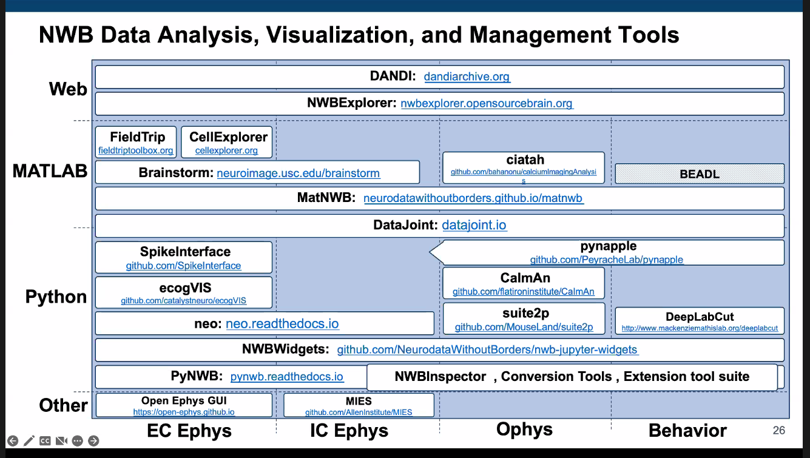

An open webinar by Allen#
This is the open neurodata showcase.
The idea is to change the mindframe from "What new experiment should I design?" to "What query should I run on existing data".
They need help for this and it will be an interative process.

Dandihub is currently free, and works with DataLad.
MindScope program#
Openscope with mindscope - they open up their assets to the community, who can submit experiments (so it acts as an observatory).
Roundtable on data - reuse#
Saskia de Vries, Bing Bruton, Mackenzie Mathis, Colleen Gillon.
Interesting, Colleen Gillon - had a whole chapter on sharing open data. This could actually be really solid for [COLLABORATOR]'s data if I put in a little bit more time...
Biggest problem - reinventing the wheel - be flexible, and don't make people use the same thing.
Dandi seems to have come along a lot also https://www.dandiarchive.org/.